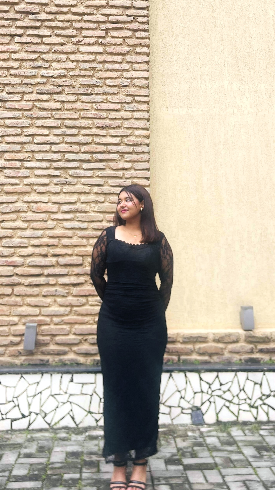
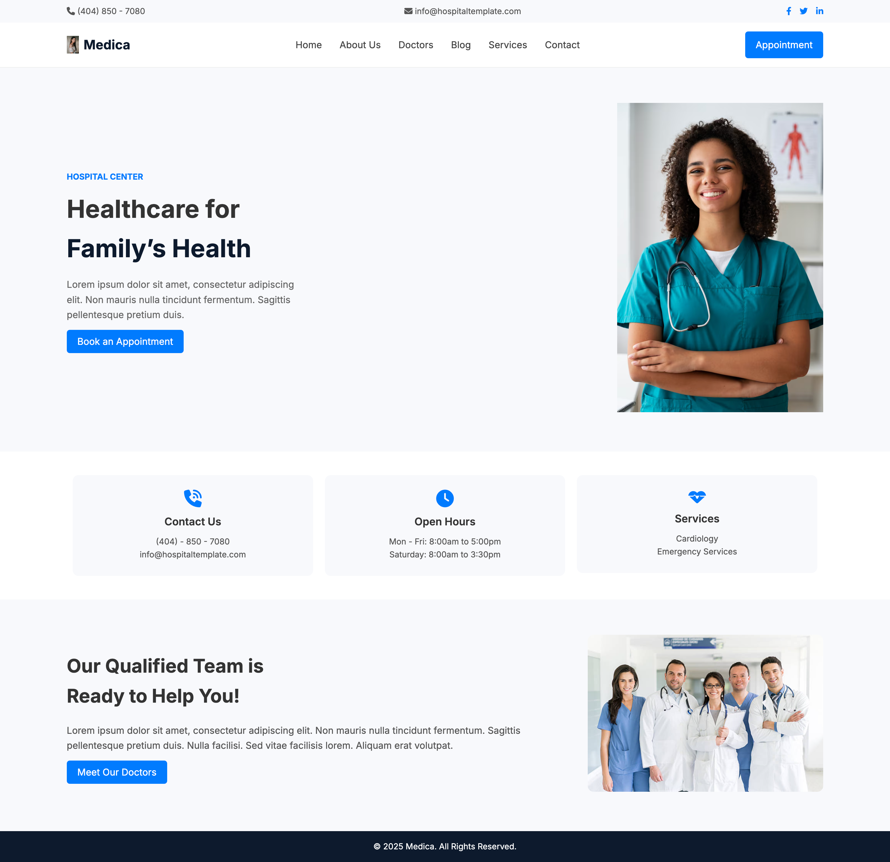
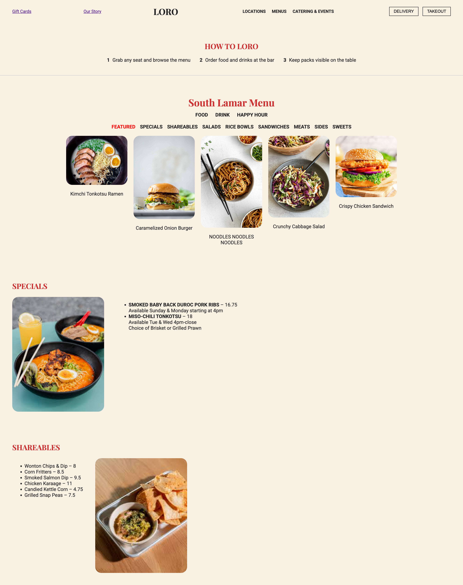
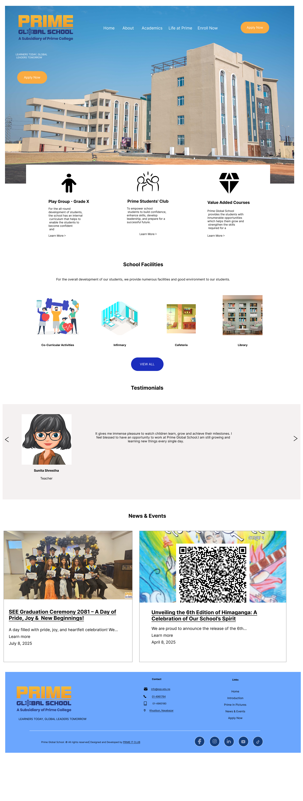

Experiment
This section is dedicated to my design experiments — playful prototypes and creative ideas I explore while learning.

.png)
A passionate UI/UX designer based in Kathmandu, Nepal. I create intuitive, user-centered digital experiences that combine usability, accessibility, and aesthetics.

I’m Prasna G.T., a dedicated UI/UX designer currently on a journey to shape engaging and meaningful digital experiences. My focus is on blending usability, accessibility, and visual appeal to create designs that are both functional and delightful to use.
I enjoy exploring how design can solve real problems, improve daily interactions, and inspire creativity. My process often involves research, wireframing, prototyping, and iterating to bring ideas to life in ways that feel seamless for users.
Tools I’m working with: Figma, HTML, CSS, Illustrator, Photoshop
Beyond design, I love experimenting with new concepts, learning continuously, and pushing boundaries to become a versatile designer who brings value to every project.
Here are some of my professional and academic projects. More to come!



This section is dedicated to my design experiments — playful prototypes and creative ideas I explore while learning.
If you'd like to connect, collaborate — feel free to reach out!
Email: prasnagt119@gmail.com
Location: Tokha, Kathmandu